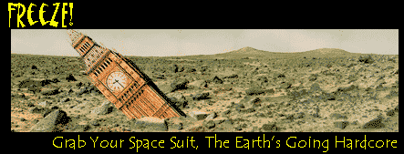
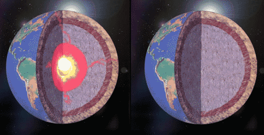
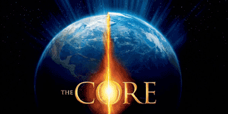

<html>


<!-- Mirrored from www.exitmundi.nl/core.htm by HTTrack Website Copier/3.x [XR&CO'2014], Mon, 28 Jun 2021 00:57:17 GMT -->
<!-- Added by HTTrack --><meta http-equiv="content-type" content="text/html;charset=UTF-8" /><!-- /Added by HTTrack -->
<head>
<meta http-equiv="Content-Language" content="en-us">
<meta http-equiv="Content-Type" content="text/html; charset=windows-1252">
<meta name="GENERATOR" content="Microsoft FrontPage 4.0">
<meta name="ProgId" content="FrontPage.Editor.Document">
<title>The Earth's Going Hardcore and We're Putting On Space Suits</title>
</head>

<body bgcolor="#000000" text="#FFFFFF" link="#00FFFF" vlink="#FF00FF">

<p class="MsoNormal" align="center"><span lang="EN-US"><font face="Arial" size="3"><br>
<o:p>
&nbsp;
</font></span></p>
<blockquote>
  <blockquote>
    <p class="MsoNormal" align="center"><span style="mso-fareast-font-family: Times New Roman; mso-ansi-language: EN-US; mso-fareast-language: EN-US; mso-bidi-language: AR-SA" lang="EN-US"><span style="font-size:12.0pt;font-family:&quot;Times New Roman&quot;;
mso-fareast-font-family:&quot;Times New Roman&quot;;mso-ansi-language:EN-US;mso-fareast-language:
EN-US;mso-bidi-language:AR-SA"><font color="#FF9900" face="MS Sans Serif" size="4">It
    happened on Mars. It happened on the Moon. And now, billions of years later,
    it looks like our world is on death row, too. Earth should be the next
    planet to experience freezing of its core -- turning our world into an
    empty, lifeless chunk of rock, quite much like Mars.<br>
    </font></span></span></p>
  </blockquote>
  <p class="MsoNormal"><font face="MS Sans Serif" size="3">As you may know, our
  planet is filled with super hot fluid, much like a Belgian chocolate. When
  volcanoes erupt, they spew out the liquid -- it’s magma. Even deeper in the
  Earth’s core, there should be a massive, searing ocean of molten metal
  sloshing about. The core of the Earth is made of liquid iron, peppered with
  liquid nickel.</font></p>
  <p class="MsoNormal"><font face="MS Sans Serif" size="3">
<div align="right">
    <table border="0" width="120" align="right" height="600">
      <tr>
        <td width="100%"><script type="text/javascript"><!--
google_ad_client = "pub-5046374505441754";
google_ad_width = 120;
google_ad_height = 600;
google_ad_format = "120x600_as";
google_ad_type = "text_image";
//2007-01-16: Indexbreed-grijzig, Grafieten hap
google_ad_channel = "9064366162+6276089418";
google_color_border = "CC0000";
google_color_bg = "CCCCCC";
google_color_link = "CC0000";
google_color_text = "333333";
google_color_url = "666666.html";
//--></script>
<script type="text/javascript"
  src="../pagead2.googlesyndication.com/pagead/f.txt">
</script></td>
      </tr>
    </table>
  </div>Now really, we at
  Exit Mundi don’t like volcanoes and earthquakes and all that any more than
  you do. But still, we should consider ourselves lucky to have all of this molten stuff
  under your feet. Without it, we would have no land to live on! The
  magma constantly replenishes the land: it boils up in the Atlantic ocean,
  freezes and thus constantly adds rock and soil to our world. Just think of it:
  every mountain you see, every piece of stone you pick up: it was all once
  liquid magma!</font>
  <p class="MsoNormal"><font face="MS Sans Serif" size="3"><font color="#FF9900">But
  there’s trouble ahead.</font> Very slowly, the Earth is cooling down from
  outside in, much like an oven dish placed in a fridge. The Earth is freezing.
  In the end, the Earth’s core will no longer be liquid, but solid. Our
  planet’s restless bowels will calm down -- forever.</font></p>
  <div align="left">
    <table border="0" cellpadding="0" cellspacing="0" width="355" align="left">
      <tr>
        <td width="100%"></td>
      </tr>
      <tr>
        <td width="100%">
          <p align="center"> <font color="#FFFF00" face="MS Sans Serif" size="1">The
          Core, before and after</font></td>
      </tr>
    </table>
  </div>
  <p class="MsoNormal"><font face="MS Sans Serif" size="3">The first thing you
  would notice is less volcanoes, and less earthquakes. Hey, that’s fun -- but
  it’s just the beginning. Slowly, wind and rain will begin to erode the Earth
  away. Very gradually, mountains will shrink. Grain by grain, they will crumble
  down, and get washed away by rain and rivers, into the sea. It will take
  hundreds of millions of years, that’s the good news. But the bad news is
  that in the end, there will be no more land left! It’s a bit strange to
  imagine, but when you level out all the land evenly across the globe, and
  smear it out onto the bottom of the sea, you would find nothing will be stick
  out of the water. No continents, no rocks, no islands, not even a sand bank.
  All that will be gone forever.</font></p>
  <p class="MsoNormal"><font face="MS Sans Serif" size="3"><font color="#FF9900">So
  okay, you decide to live on some kind of ship from now on</font> -- with many
  millions of years ahead, there’s plenty of time to build some sort of Ark.
  But wait. Next thing you know, the deeper, liquid metal core starts to freeze
  up, too. And that means the Earth’s magnetic field will weaken -- and go
  out. Forever.</font></p>
  <p class="MsoNormal"><font face="MS Sans Serif" size="3">Now that really
  brings out the beast. As we explained elsewhere on this site, no magnetic
  field means: no protection against space radiation. We will have more cancers,
  and more blackouts. But that’s not the big issue. The worst part is, our
  atmosphere will begin to vanish. Very slowly, molecule by molecule, the stuff
  we call air will be lost in space.</font></p>
  <p class="MsoNormal"><font face="MS Sans Serif" size="3">It’s the solar wind
  doing this, my friends. Without magnetic field, the stream of particles coming
  from the sun can quietly eat away the atmosphere. The atmosphere will
  literally be blown away, direction deep space!</font></p>
  <p class="MsoNormal"><font face="MS Sans Serif" size="3"><font color="#FF9900">According
  to some researchers,</font> exactly this is what happened on Mars a few
  billions of years ago. Mars is much smaller than our planet, and accordingly,
  it froze up sooner. Scientists believe this is what killed Mars. With it’s
  magnetic field down, the Sun could blow away Mars’ early atmosphere. After a
  few hundreds of millions of years, it was gone.</font></p>
  <table border="1" cellpadding="0" cellspacing="0" width="328" bordercolor="#0000FF" align="right">
    <tr>
      <td width="300" align="right" bordercolor="#FFFFFF"></td>
    </tr>
    <tr>
      <td width="300" align="right" bordercolor="#FFFFFF">
        <p class="MsoNormal" align="left"><font face="MS Sans Serif" size="2" color="#FFFF00"><b>Can
        &quot;The Core&quot; really happen?</b></font></p>
        <p align="left"><span style="mso-fareast-font-family: Times New Roman; mso-ansi-language: EN-US; mso-fareast-language: EN-US; mso-bidi-language: AR-SA"><font face="MS Sans Serif" size="2" color="#FFFF00">
        </font><font face="MS Sans Serif" color="#FFFF00" size="1">In the
        Hollywood movie &quot;The Core&quot; (2003), the Earth’s core suddenly
        becomes ‘deactivated’ -- for reasons that remain unclear throughout
        the movie.<br>
        It’s a bad movie, and so is the science behind it. There’s just no
        way the huge, soaring sea of molten metal below our feet can suddenly
        ‘stop’. The core is bigger than the planet Mars! Really, there’s
        no stopping it. What’s more, ‘reactivating’ the core with a nuke
        is total nonsense, too. It’s the kind of stuff that only happens in
        movies -- not on the real planet. &quot;Monumentally dumb&quot; --
        that’s what The New York Times called it.</font></span>
        <p>&nbsp;</td>
    </tr>
  </table>
  <p class="MsoNormal"><font face="MS Sans Serif" size="3">Hey, but Mars has
  this other thingie too: it has no liquid water. Well -- the same lies in store
  for our planet. With no atmosphere, there is no air pressure to hold down the
  water. All water would simply vanish into thin air -- literally.</font></p>
  <p class="MsoNormal"><font face="MS Sans Serif" size="3">So just imagine it:
  you’re sitting in your Ark, wearing a space suit -- when suddenly, ahoy,
  land in sight! But pretty soon after that, you’ll find that land is about
  the only thing left. Oceans become lakes, and lakes become ponds. And in the
  end, the ponds will evaporate too. Oh, now that’s cool -- now you’re
  without water, too.</font></p>
  <p class="MsoNormal"><font face="MS Sans Serif" size="3"><font color="#FF9900">We’ll
  find ourselves on a kind of Mars the Second</font>: a lifeless, airless,
  waterless, dead world -- with only some gullies and dried-up river beds
  remembering of its more lively past.</font></p>
  <p class="MsoNormal"><font face="MS Sans Serif" size="3">If that doesn’t
  depress you, there’s this: the freezing of the core seems quite inevitable.
  It isn’t some speculative, weird phenomenon -- most experts agree the
  freeze-up is indeed going to happen one day.</font></p>
  <p class="MsoNormal"><font face="MS Sans Serif" size="3">Fortunately, you and
  we won’t be there to tell the tale. We’re looking at billions of years,
  before the freezing really begins to show. Some 2,000,000,000 years, it is
  estimated. That’s plenty of time to make a nice space suit for everybody on
  the planet.</font></p>
<blockquote>
  <p class="MsoNormal" style="text-align:justify;line-height:12.0pt;tab-stops:-72.0pt -36.0pt"><span lang="EN-US" style="letter-spacing:-.15pt"><font face="MS Sans Serif"><o:p></o:p>
  </font></span></p>
  <div align="right">
    <table border="0">
      <tr>
        <td><a href="mailto:mke@xs4all.nl"></a></td>
        <td><a href="intro2.html"></a></td>
      </tr>
    </table>
  </div>
</blockquote>


  <p class="MsoNormal">&nbsp;<div align="center">
    <center>
    <table border="0" width="728" height="90">
      <tr>
        <td width="100%"><script type="text/javascript"><!--
google_ad_client = "pub-5046374505441754";
google_ad_width = 728;
google_ad_height = 90;
google_ad_format = "728x90_as";
google_ad_type = "text_image";
//2007-01-16: rood grafiet leaderbord
google_ad_channel = "5833008090";
google_color_border = "CC0000";
google_color_bg = "CCCCCC";
google_color_link = "CC0000";
google_color_text = "333333";
google_color_url = "666666.html";
//--></script>
<script type="text/javascript"
  src="../pagead2.googlesyndication.com/pagead/f.txt">
</script>
      </tr>
    </table>
    </center>
  </div>
<p class="MsoNormal"><span lang="EN-US"><o:p><br>
</span></p>
  <p><!-- End Webstats4U code -->
  </p>
  <p align="center"><font size="2">All texts Copyright © Exit Mundi / AW Bruna
  2000-2007.<br>
  You're not allowed to copy, edit, publish, print or make public any material
  from this website without written permission by Exit Mundi.</font></p>
</blockquote>


<p>
<!-- End Nedstat Basic code -->


</p>


<!-- Mirrored from www.exitmundi.nl/core.htm by HTTrack Website Copier/3.x [XR&CO'2014], Mon, 28 Jun 2021 00:57:23 GMT -->
</html>
